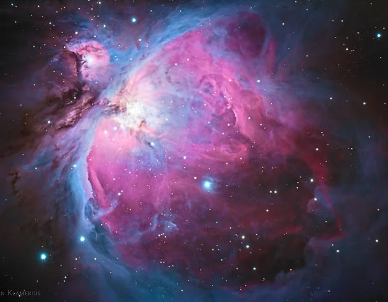
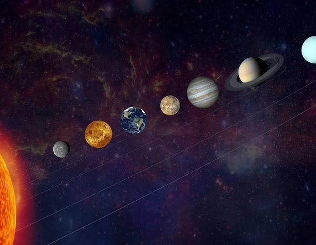

¿Qué es una galaxia?
Una galaxia es un conjunto de estrellas, nubes de gas, planetas, polvo cósmico, materia oscura y energía unidas gravitatoriamente en una estructura más o menos definida a esta tambien se le conoce como un conglomerado de cientos de miles de millones de estrellas, gas interestelar (fundamentalmente hidrogeno) y polvo interestelar (granos de silicatos). se mantiene como sistema gracias a la atraccion gravitacional”
Una galaxia, como la Vía Láctea, tiene tres grandes regiones que conforman su estructura: Disco, que tiene un patrón de brazos espirales y contiene estrellas jóvenes y mucho polvo y gas interestelares Halo galáctico, que posee una distribución esférica en torno al centro de la galaxia y contiene estrellas viejas Bulbo galáctico, que se encuentra en el centro de la galaxia y da lugar a parte de las estrellas más viejas
¿Cómo se creo la galaxia? El big bang
El Big Bang es cómo los astrónomos explican la forma en que comenzó el universo. Es la idea de que el universo comenzó como un solo punto, luego se expandió y se estiró para crecer tanto como lo es ahora, ¡y todavía se está extendiendo! Según la teoría del Big Bang, hace unos 13.800 millones de años, el universo, concentrado en un ínfimo y a su vez infinitamente pequeño punto que albergaba toda la materia, explotó para después enfriarse a medida que se expandía. Posteriormente, en el transcurso de esta expansión, se fueron desencadenando y encandenando a su vez, las reacciones que cocinaron las primeras estrellas, galaxias, y todo aquello que hoy vemos en el Universo.
¿Qué podemos encontrar en la galaxia?

Agujeros negros

Nebulosa

planetas

polvo cosmico